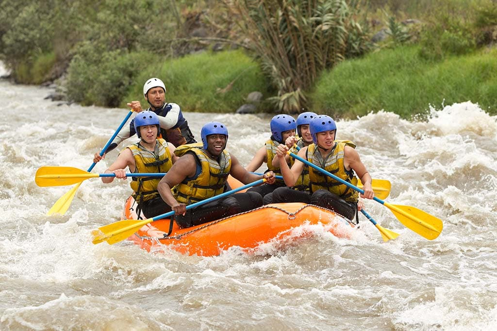
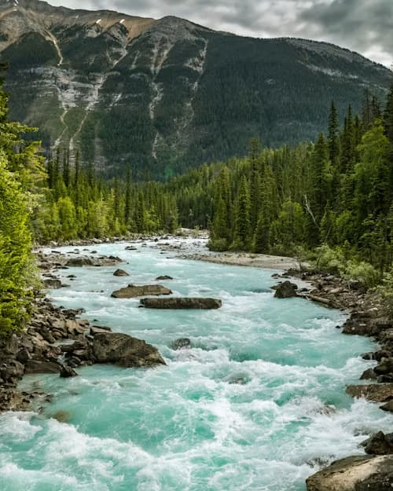
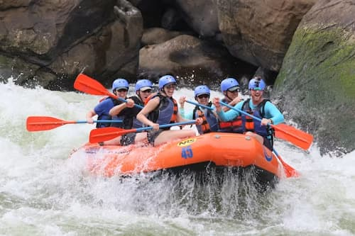

Experience the ultimate whitewater adventure on the wild rapids of the Barranca River. Our certified guides ensure safety and adrenaline-pumping fun for adventurers of all skill levels!


Experience the ultimate whitewater adventure on the wild rapids of the Barranca River. Our certified guides ensure safety and adrenaline-pumping fun for adventurers of all skill levels!
Founded in 2010, Action Rapids Barranca began with a simple passion for whitewater river rafting and a desire to share the beauty of nature with thrill-seekers.

Over the past decade, we have guided thousands of happy adventurers safely down class III to V rapids, maintaining an exemplary safety record.

